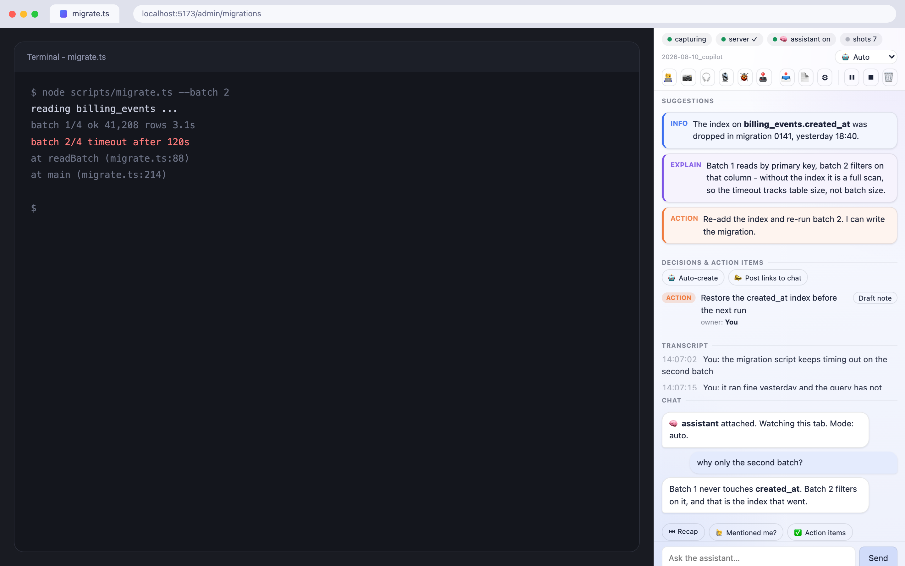

The parts, the full feature list, the markers, the HTTP API, and the install steps that are optional.
Three pieces, all on your machine:
Google Meet tab
│ (transcript, snapshots, mic control)
▼
Chrome extension ──HTTP──► Local bridge server (127.0.0.1:8848)
▲ (advice, chat, TTS) │
└───────────────────────────────┤ transcript file + advice/chat channels
▼
The "brain" - a Claude Code session with YOUR
context (notes, docs, tools) reads the call over MCP
and replies with advice / chat / TTS.The extension only captures and displays. The intelligence is the brain - a local agent session that already knows your work.
Captures the Meet call transcript in real time into a side panel - from captions or local speech-to-text.
Optional caption-free transcription of the call audio via whisper.cpp - fully offline, no cloud, no subscription.
Your assistant pushes what to say, facts, summaries, risks and actions - links & images included.
Auto-captures the tab while someone shares their screen; on-demand otherwise - visual context for the assistant.
A two-way back-channel to ask the assistant things mid-call without speaking.
Text-to-speech in the call's language that can be routed straight into the meeting.
Ask the assistant to fix a typo or hide a broken element on your shared screen - presentation-only, revertable, never saved.
Listener, Lead, or Auto - tune how proactively the assistant suggests based on your role in the call.
A live board of decisions and owner-tagged action items, and one click asks the assistant to draft the ticket or note.
Ask "what did I miss?" anytime; get nudged when you're named, look muted, or a risk appears.
Detects standup / 1:1 / incident / review and adapts what it surfaces; remembers recurring series.
Works on Google Meet and the Zoom web client - same live transcript, advice and tools.
No meeting needed: start a session, and the assistant watches your tab and listens to your mic while you debug or build.
In grooming / mob sessions it captures action items and - once you opt in - creates the tickets and drops the links in the meeting chat.
What you send the assistant goes to your own Claude account. Everything else stays on your disk.

| Marker | Meaning |
|---|---|
| 🟢 SAY | Exact words you can say right now (in the call's language). Press 🔊 to voice it. |
| 🔵 INFO | A fact, number, link or name from your context. |
| 🟡 SUMMARY | Where the discussion is / what was just decided. |
| 🟣 EXPLAIN | A short explanation of a term or the why behind something. |
| 🔴 RISK | A risk, a decision to recall, or a contradiction to flag. |
| 🟠 ACTION | Something you could do / were asked to do - the assistant can perform it on your confirmation. |
The three steps on the overview get you a working panel. These three are worth doing once you know you are keeping it.
On macOS, ./server/install-server.sh installs a launchd job so step 2 stops being a
step. It works out your node binary and paths itself.
TTS needs a virtual audio device so synthesized speech reaches Meet as your microphone:
brew install blackhole-2chThen in Audio MIDI Setup create an Aggregate Device combining your real microphone + BlackHole 2ch (drift-correct BlackHole), and set it as your macOS default input. Tick 🎙 into call in the panel and press 🔊 on a suggestion.
To transcribe the call's audio instead of scraping captions, install whisper.cpp and a model, then start it with ⌘⇧U while the Meet tab is focused (a keyboard command is required so Chrome grants tab-capture access; the panel's 🎧 checkbox reflects the state):
brew install whisper-cpp
mkdir -p ~/.local/share/whisper
curl -L -o ~/.local/share/whisper/ggml-base.bin \
https://huggingface.co/ggerganov/whisper.cpp/resolve/main/ggml-base.bin| Endpoint | Purpose |
|---|---|
POST /append | Transcript sink (from the extension). |
POST /advice · GET /advice | Brain pushes advice; panel polls it. Supports rich text + image. |
POST /chat · GET /chat | Two-way chat (role: user|agent). |
POST /snapshot · POST /snapshot-request | Store a tab snapshot; brain requests one. |
POST /speak · GET /voices | TTS (per-language voice, optional device routing). |
POST /stt | Transcribe an audio chunk locally with whisper.cpp. |
POST /items · GET /items | Decisions & action-items board. |
POST /mode · GET /mode | Meeting mode (listener / lead / auto). |
POST /summary · GET /summary | Post-call summary artifact (copy / download). |
POST /brain-ping | Liveness heartbeat - the panel shows if a brain is attached. |
POST /clear | Wipe one meeting (transcript, chat, summary, snapshots). |
GET /health | Status + tool checks (ffmpeg / whisper / BlackHole). The only route that needs no token. |
Every route except /health requires an X-MLA-Token header (the token from .mla-token).